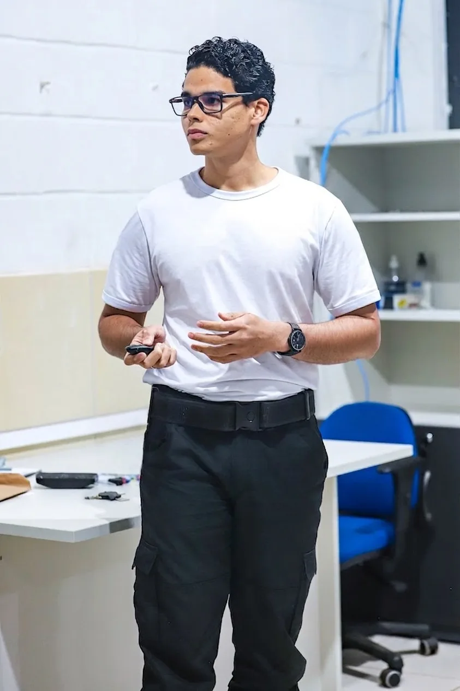
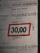
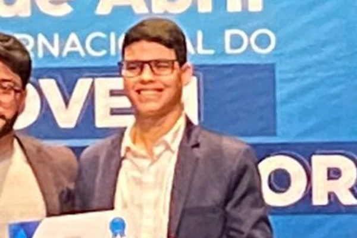
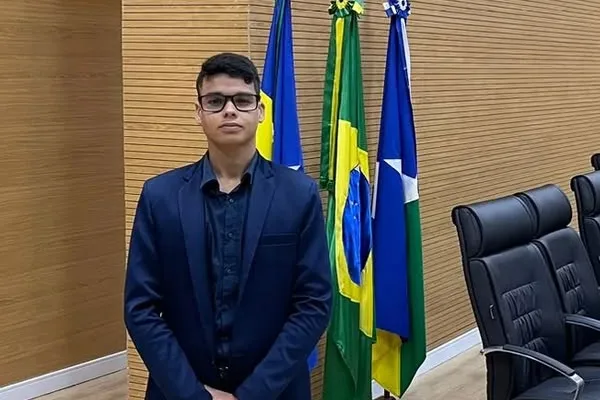
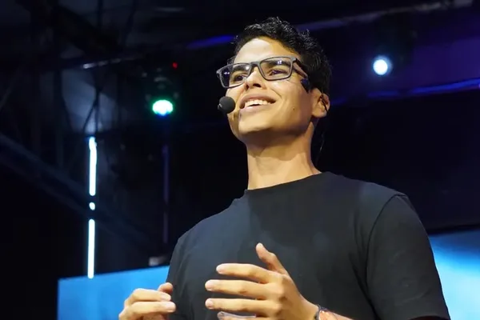

01
Inteligência de prova
Análise de editais e provas anteriores.
Redação, discursivas e estratégia para quem
leva concurso público a sério.
Professor de redação|Bacharel em Direito|Escrivão de Polícia|Concursos e discursivas
Missão atual
3.000 oportunidades.
Uma comunidade dedicada ao concurso da Prefeitura de Porto Velho para reunir análise de edital, legislação, questões e orientação em um só lugar.
Entrar no grupo do WhatsAppAnálise de editais e provas anteriores.
Constitucional, Administrativo, Legislação Municipal e específica.
Artigos críticos, súmulas e temas prioritários.
Discussão técnica e resolução colaborativa.

Método
Ensino a entender o que a banca pediu,
construir a resposta e parar de entregar
pontos por erros que poderiam ser evitados.
▪ Prof. Charles / Método
Planejamento
Execução
Acompanhamento
Evolução
Estrutura, argumentação e adequação ao comando.
Estratégia específica por banca e edital.
Clareza, precisão e técnica.
Análise de espelho e elaboração de recursos.
Planejamento, método e acompanhamento individual.

30,00 / 30,00
Aluno orientado em redação
e atuação em recurso discursivo.
45,60 / 50,00
Resultado de aluno orientado
para Analista Judiciário.
Recurso
provido
Majoração de pontuação e ganho
de posições na classificação final.

Campeão do Concurso
de Redação da ALE/RO.
940 na redação do ENEM.
Palestras, atuação acadêmica
e aproximação com o meio
jurídico.
Bacharel em Direito e
consolidação da trajetória
jurídica.

Posse como Escrivão de Polícia
do Estado de Rondônia.

Professor de redação, discursivas
e estratégia para concursos.